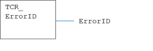
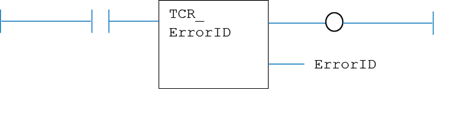

System Parameter
Reads the last error produced by any of the TCR/TCW functions.
|
None |
|
|
ErrorID : UINT; |
Error ID value |
Reads the error code of the most recent TCR or TCW function processed, returning its value in the ErrorID output.
MyTCR_ErrorID();
ErrorID:= MyTCR_ErrorID.ErrorID;

